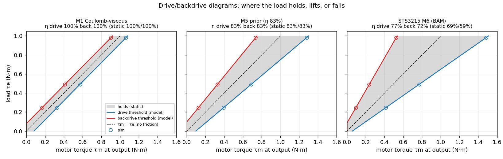
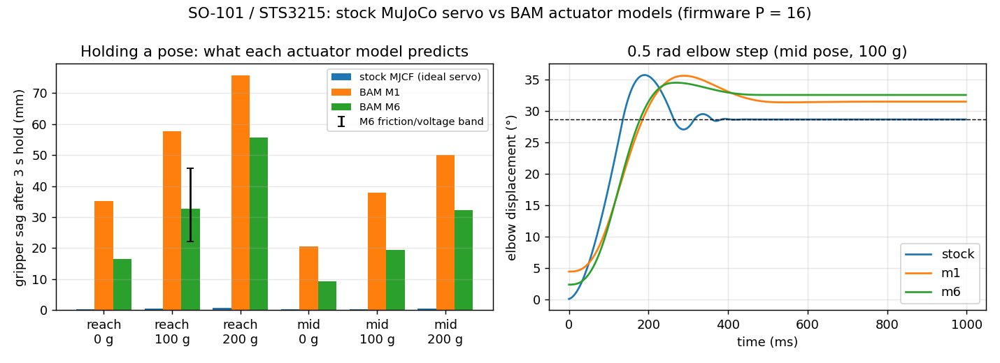
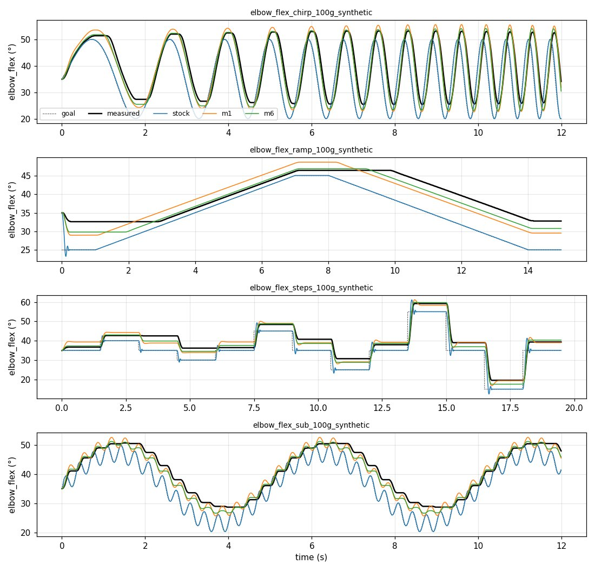

A simulation is only as honest as its actuators. Our workcell sims, our arm-mounted grippers and our configuration search all use the same SO-101 arm model: the upstream MuJoCo file most SO-101 projects start from. It drives each Feetech STS3215 servo as an ideal position controller with a stiffness of 998 N·m/rad. The real servo is a firmware P loop. It rate-limits the target, sets a motor duty cycle in proportion to the error, and works through a 1:345 plastic gearbox whose friction depends on the load. At the gain lerobot sets for the SO-101, that loop's stiffness is about 10 N·m/rad, roughly 100× softer.
That changes what the sim predicts. With the arm at full reach, the stock model says the gripper sags 0.3 mm. A model of the real servo says 16.5 mm, and 56 mm with 200 g in the gripper. In a pipeline where every check re-runs on every change, the actuator model decides which of those checks mean anything. So this round of work went into the actuators.
The recipe we borrowed
Two groups have already done the hard part. Rhoban's BAM (Better Actuator Models, ICRA 2025, arXiv 2410.08650) models a servo down to its firmware control law. Its friction grows with load, differs between driving and being backdriven, and is higher at rest. They identified it from pendulum recordings and published fits for common servos, including the STS3215. Pollen Robotics then used BAM for Microduck, their 800 g walking robot, noting that at that scale "actuator fidelity is most of the sim2real gap". Their recipe:
- model the actuator's control law, not an ideal servo
- randomize what can't be pinned down (friction, supply voltage, delay)
- put backlash in series with each servo, with the encoder reading through it
- compare sim and real on a single-servo testbench
We applied it across PUNKFAB's simulations.
01 / Our own gearboxes: friction that depends on load
For drives we design ourselves, there's no fitted model yet, only a prediction. Our sims modelled gearbox loss as a scaled-down motor torque plus a constant drag. That gets driving right but gets holding wrong: it makes the motor pay extra just to hold a load, when in a real gearbox friction helps hold it. We rebuilt the friction as BAM's models, generated from our own predicted efficiency before anything is printed. The implementation matches BAM's own code to 1e-15, and the simulation lands within 0.5% of the model's predicted thresholds for every model we tested.
- Holding current dropped 1.8×. Our 40:1 test actuator needs 199 mA to hold its test load, not the 361 mA the old model claimed.
- A rule of thumb didn't survive the data. The common estimate that backdriving is always less efficient than driving held for only 2 of the 8 servos BAM has fitted. Their ratio ranges from 0.94 to 1.17, so our prior now treats the two as equal until a bench measures them.
- The simulator itself was hiding the effect. MuJoCo's friction is a soft constraint, so with default settings a held joint creeps at about 0.5°/s even inside its friction limit. That erased every holding result: all the friction models looked identical until we stiffened it. Stiffening it cuts the creep 100×.

02 / The SO-101: the servo we actually use
The STS3215 already has a fitted model, so we used it directly. We converted the arm's servos to BAM's STS3215 model at lerobot's firmware gain, and compared it with the stock model on the same arm:
| stock model | BAM M6 | |
|---|---|---|
| Gripper sag, full reach, empty | 0.3 mm | 16.5 mm |
| Gripper sag, full reach, 200 g | 0.7 mm | 55.6 mm |
| Same with friction ±30% and supply 6.8–8.0 V (100 g) | 0.5 mm | 22–46 mm |
| Rest point, arriving from above vs below | identical | 4 mm apart |
| Final error after a 0.5 rad elbow step | 0.03° | 3.9° |
The honest model also has a memory. With 100 g at full reach, the gripper rests 33 mm low if the load is added to a stationary arm, and 50–54 mm low if the arm moved there. Friction holds whatever the motion leaves behind. Small, fast corrections (a ±3° ripple at 3 Hz on a slow move) mostly disappear into the gearbox. The stock model tracks both perfectly, and a real STS3215 won't.

03 / Re-running a gate that already passed
A better model is only useful if it re-checks earlier claims. One of our workcell gates drives the arm to 60 mm above a work datum and passes if it arrives within 20 mm. It passed with the stock servo, at 0.4 mm. We re-ran it unchanged except for the actuators. It still passes, at 4–6 mm from empty to 300 g, and it holds across the whole randomized friction and voltage range. So that gate was fine. But anything tighter than about 5 mm near that pose was resting on a servo that doesn't exist: an insertion, a fixture that has to seat, a tool that has to find its datum. Those claims are now a band to check, not a point to trust.
04 / Closing the loop on real hardware
BAM's fit is Rhoban's servos on Rhoban's bench, not ours. So the last piece is a loop that corrects the model from recordings of a real arm:
- a recorder moves one joint through BAM-style test motions: a speed-ramped sine sweep, slow raise and lower, steps, and ripple
- a replay runs the same commands in the sim with each model and scores the error
- a fit corrects the friction, gain and inertia to match
We verified the loop on stand-in recordings with a known answer: M6 with friction ×1.4, gain ×0.85 and real encoder resolution. The fit recovered friction ×1.404 and gain ×0.851, and error on held-out data fell from 1.10° to 0.02°, the encoder's resolution.

What isn't done
No real arm has been recorded yet. Every SO-101 number above comes from BAM's fit, not our servos. The recorder is written against lerobot's arm interface but hasn't touched hardware. Backlash isn't modelled yet. The fitted model covers the standard 7.4 V follower servo; the 12 V variant and the leader arm's lower-ratio servos need their own recordings. That's the point of the simulation is a cache of reality: the numbers are marked as predictions until a measurement replaces them, and when one does, every gate re-runs against it.
Who did what
We found BAM and Microduck and set the goal: sims whose claims hold on hardware, across everything PUNKFAB builds. Claude read the paper and both codebases, and wrote and verified the models, the SO-101 comparison, the gate re-check and the record, replay and fit tools. It also caught its own backdrive rule of thumb when BAM's data contradicted it.
Everything is open in punkfab/robot-actuators, under friction/ and sts3215/, with the project-wide plan in REAL2SIM.md. Got an assembly that should be proven in simulation, with its actuators modelled honestly, before it's built? Start a project →